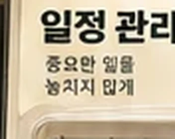
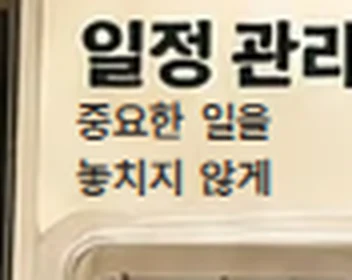
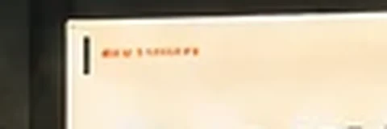
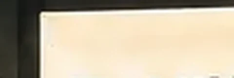
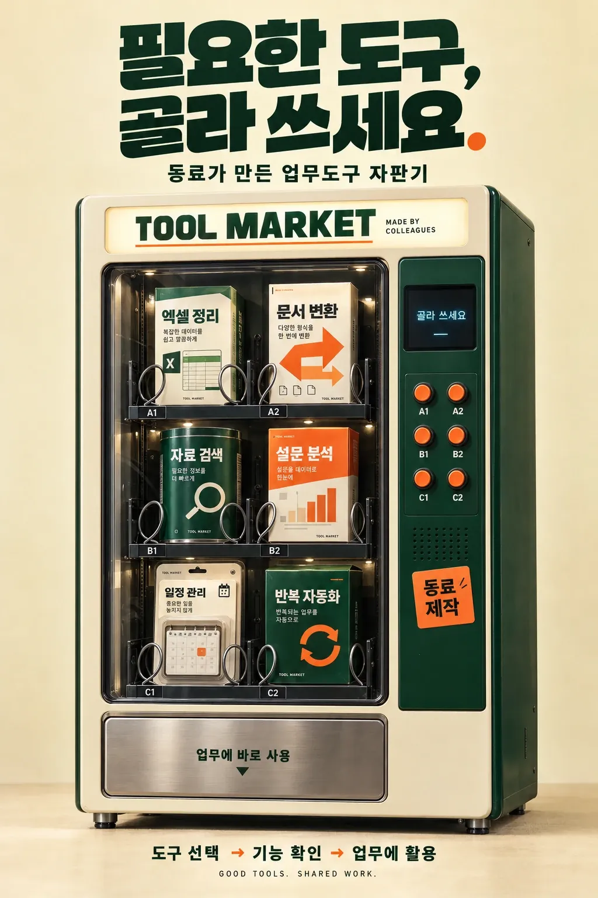

깨진 한글 고치기
일정 관리 상자의 부제가 "종요한 읾을 놓치지 앏게"로 깨져 있었다. 글자만 지우고 "중요한 일을 / 놓치지 않게"를 같은 크기로 다시 얹었다. AI 그림의 작은 한글은 거의 항상 이렇게 깨진다 — 반드시 확대해서 볼 것.
Print ReferenceNo. 64
명령형 두 줄 제목 + 사물 한 대 + 3단 흐름. 큰 여백 위에 실물 같은 자판기 하나로 끝내는 제품 광고 문법.
시리즈 · 업무도구 나눔#70발견 · 앱 장터 #68만들기 · 작업실 #69써 보기 · 미션북 #63고르기 · 자판기 #64알리기 · 포스터
동료가 만든 업무도구 자판기
중요한 일을
놓치지 않게
도구 선택→기능 확인→업무에 활용
GOOD TOOLS. SHARED WORK.
크림 벽 앞에 선 자판기 한 대와 "필요한 도구, 골라 쓰세요." 두 줄. 그림 속에서 깨진 작은 한글을 지우고, 부제·흐름·태그 줄을 살아 있는 글자로 바꿨다. 가상 예시


일정 관리 상자의 부제가 "종요한 읾을 놓치지 앏게"로 깨져 있었다. 글자만 지우고 "중요한 일을 / 놓치지 않게"를 같은 크기로 다시 얹었다. AI 그림의 작은 한글은 거의 항상 이렇게 깨진다 — 반드시 확대해서 볼 것.


문서 변환 상자 윗단의 알아볼 수 없는 주황 글씨를 지웠다. 읽히지 않는 글자는 장식이 아니라 오류로 보인다.
손대지 않은 것"필요한 도구, 골라 쓰세요." 제목과 자판기 그림은 원본 그대로다. 부제·흐름·영문 태그는 같은 자리·같은 크기로 글자를 다시 얹어, 문구를 바꿔도 그림을 다시 뽑을 필요가 없게 했다.

원본: 이미지 생성 AI로 만든 시안. 글자가 그림에 박혀 있다.
쉼표에서 줄을 바꾸고 마침표 하나만 주황. 문장이 곧 로고가 된다.
"궁금한 점, 바로 물어보세요." "읽고 싶은 책, 골라 가세요."
배경을 비우고 사물을 크게. 사물이 은유를 혼자 설명한다.
사물 주위 여백은 지면 폭의 15% 이상
무엇을(제목) → 어디서(사물) → 어떻게(흐름 3단).
신청 절차, 이용 안내 포스터
원칙 — 그림은 글자 없이 뽑고, 글자는 HTML·PPT로 얹는다. AI 그림 속 작은 한글은 거의 깨지고, 박힌 글자는 고칠 수 없다.
Minimal product-ad poster, 2:3 vertical. A retro vending machine stands front-facing on a warm cream floor against a cream wall, soft studio light, gentle floor shadow. Cream and deep green #173F2E body, orange #F26A2E round buttons, small dark screen, a top marquee sign. Behind the glass, 3 rows × 2 slots of work-tool packages (grid box, arrow box, green tin with magnifier, orange box with bar chart, calendar in blister pack, green box with cycle arrows) with chrome coil springs. Stainless pickup tray at the bottom. Leave the top 22% and bottom 8% empty for typography. No text, no letters, no logos on the machine or packages.
#EFE2C153%#26392818%#161D1716%#6764546%#B0A38B6%#EE702E2%완성본에서 뽑은 주요 색과 화면 차지 비율.
u 단위(지면 폭 기준) 숫자를 바꾸면 됩니다.